Three Essays on Inclusive Sustainability for Complex Social Systems
Jonathan Lamb
Dissertation Defense
RAND School of Public Policy
Committee: Steven W. Popper (Chair), Aaron Strong, Tim Gulden, Eric Lonsdorf
Inclusive Sustainability
Inclusive urban sustainability ensures equitable well-being within and between generations.
Overarching Aims
Aim 1: Holistic Well-Being
Contribute to quantifying more holistic, integrated understanding of well-being
- How aspects of human habitat contribute to well-being
- Trade-offs between different dimensions
Aim 2: Policy as Design Tool
Probe paradox of policy as purposeful design tool in complex, self-organizing systems
- Embodied in compact cities and smart growth debate
- "Compact City Fallacy" (Neuman, 2005): form as result of behavior, not vice versa
- Integration of "top-down" and "bottom-up" mechanisms
- Moroni: "patterning" vs "framework" instruments
Aim 3: Diverse Futures
Explore more diverse visions of inclusive and sustainable futures
Structure Across Three Papers
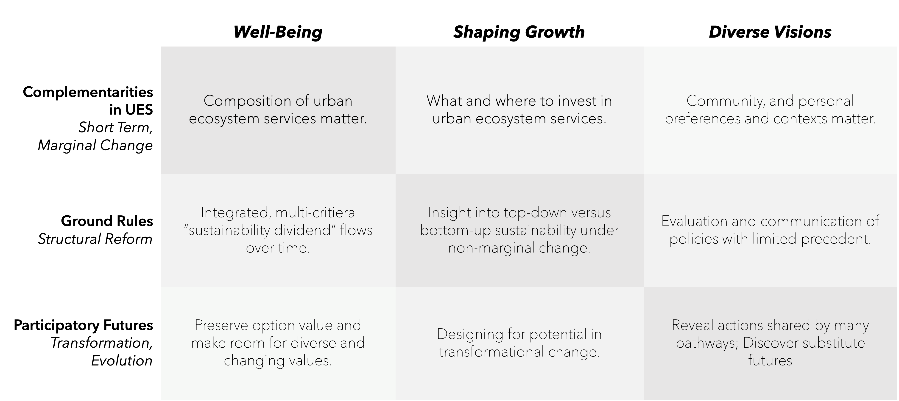Paper 1: Urban Amenity Complementarities
Motivation
- Need integrated Ecosystem Services → Urban ES → Inclusive Wealth framework
- Integrated treatment of "natural" and "artificial"
- Research Question: Are there complementarities?
- How amenities compose human habitat
- Relates to substitution across welfare dimensions
Context: ES Hedonics
- Extensively studied but almost no complementarity analysis
- Reference: D'Albouy "unlocking amenities" (crime and parks)
Conceptual Approach
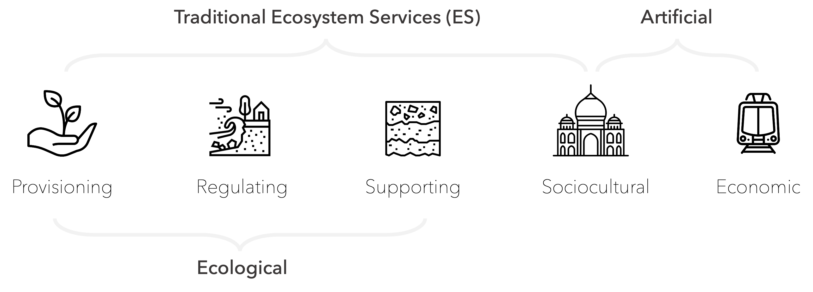Green Space
Tree canopy coverage
1m resolution landcover raster
Economic Capital
Establishments, jobs, diversity
OpenStreetMap POI for economic establishments
Third Places
Social infrastructure
Third places definition
Empirical Strategy
Minneapolis-St. Paul metropolitan area
- Spatial hedonic model with interactions
- ~50,000 transactions
- School attendance area fixed effects
- Controls: structural characteristics, accessibility, demographics
Key Results: Interactions

- All economic capital proxies significant and positive (except # jobs)
- Mobility shares positive interaction with third places
- No clear relationship between # jobs/diversity and third places
- Generally no canopy-economic interaction, except positive with # jobs
Marginal Effects
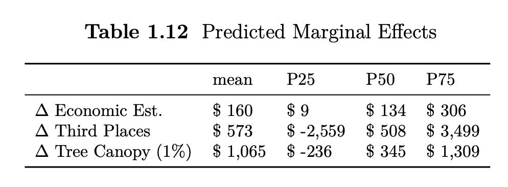- Mean effects: $160/establishment, $573/third place, $1,065/1% canopy
- Substantial heterogeneity across locations
- Median: similar for economic and third places, $345 for canopy
- Top quartile third place effects: over $3,500
Geographic Context

Shows importance of holistic picture and strategic place-based investment
UES Coverage: Tree Canopy
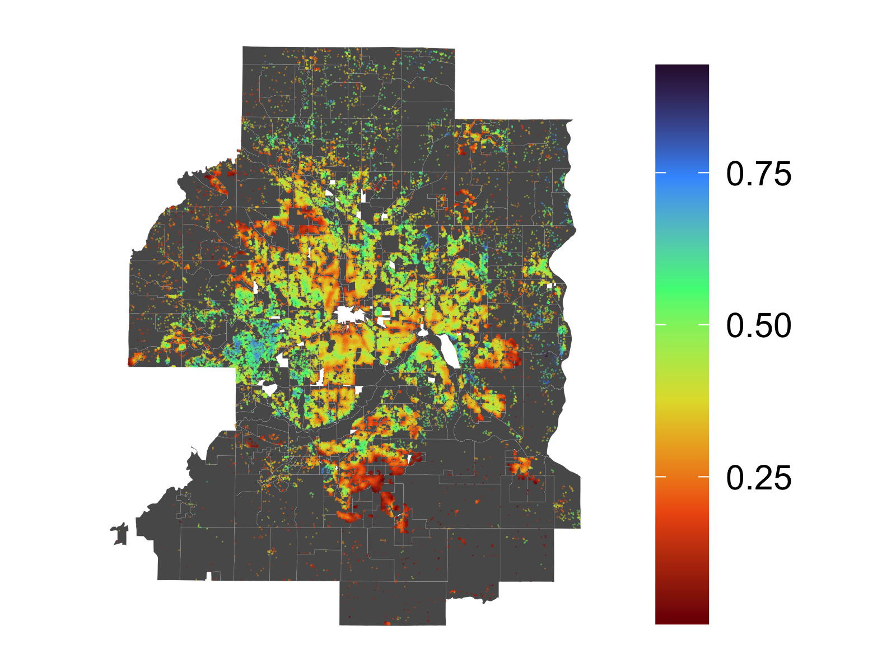UES Coverage: Economic Capital
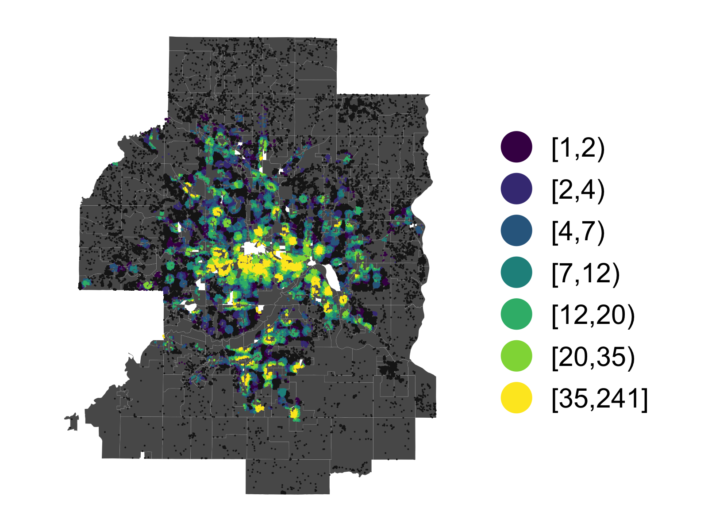UES Coverage: Third Places
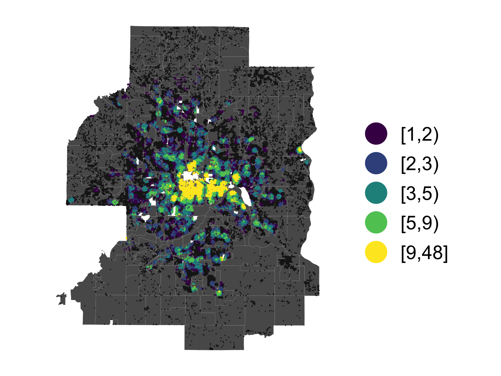Joint Coverage > 50th Percentile
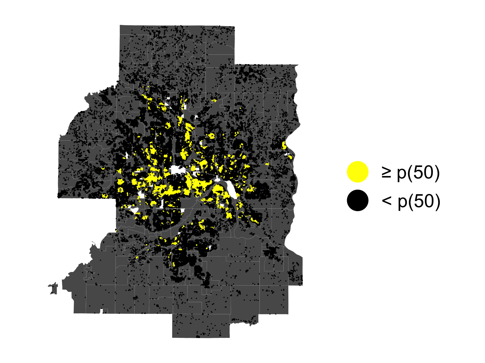Market Characteristics by Location
Sale Price Percentile
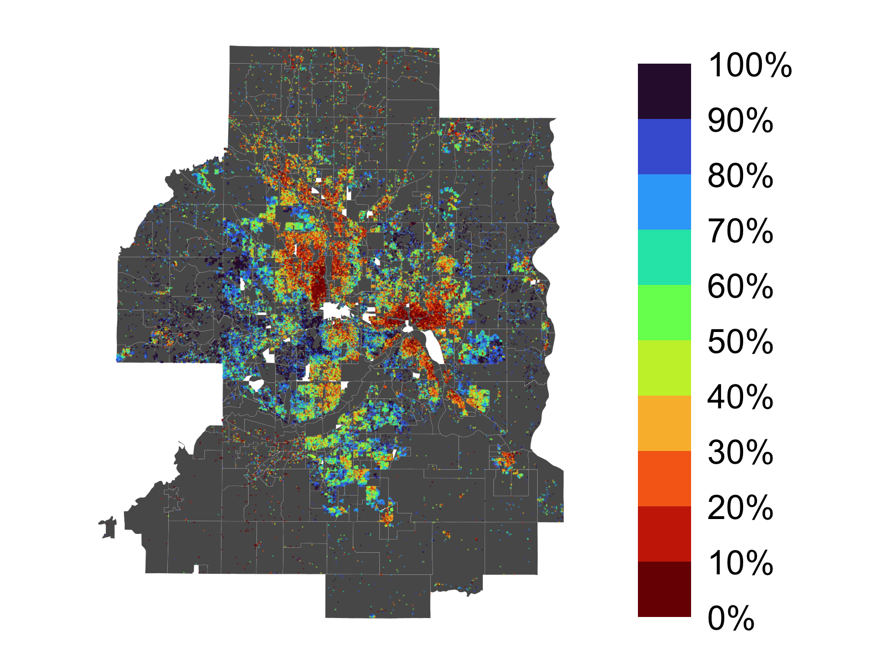Transactions Per Capita
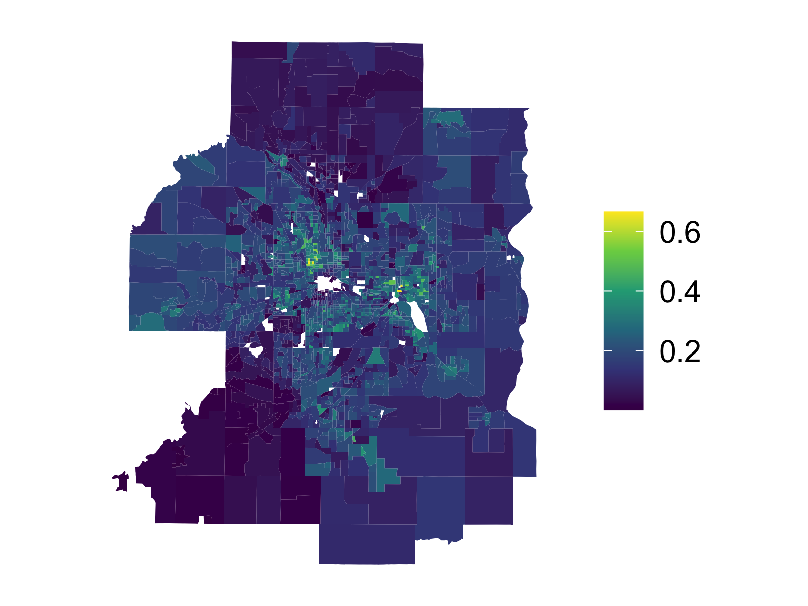Main Interaction Specifications

- Interaction terms between amenity types
- Test complementarity vs substitutability
- Spatially varying coefficients
Paper 2: Ground Rules
Incentive-Based Mechanisms for Sustainable Urban Development
The Planner's Triangle
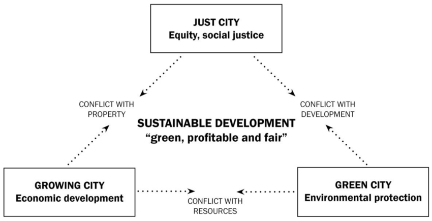Balancing economic growth, environmental impact, and social justice
Repositioned: livability/well-being, environmental impact, equity
Focus: Urban Form/Morphology
- Kropf (2018), Skrimizea et al. (2019): built and social structure in co-evolution
- Interface between sides of planner's triangle
- Framework vs. patterning instruments (Moroni et al.)
Policy Instruments Examined
Land Value Taxation (LVT)
- Tax land, not improvements
- Encourage development
- Capture unearned increment
Payments for Ecosystem Services (PES)
- Compensate green space provision
- Align private/social incentives
- Market-based conservation
ECLIPSE Model Overview
Endogenous City Landuse and Integrated Policy Sandbox Engine
- Agent-based urban economic model extending Alonso-Muth-Mills tradition
- Open city with dynamic heterogeneous households and housing stock
- Three endogenous UES:
- Green space (private market)
- Social ties (social, non-market)
- Public services (public, non-market)
- Policy experimentation platform
Model Components: Space
- Graph of unit parcels (grid) with single CBD
- Egocentric neighborhoods (3 edges)
- Parcel design: green space, density, floors
Model Components: Agents
Landlords
- Independent, absentee
- Collect rent
- Pay property taxes
- Redevelopment decisions
Households
- Infinite-lived renters
- Vary by income, social network
- Value: CBD proximity, green space, social capital
- Can enter/leave/move
Model Sequence
- Wages evolve
- Tax assessments update
- Landlords decide: keep or redevelop
- Households compete for units (M k-price auctions)
- Iterate until matched or no vacancies
- Social mixing: ties form/break by distance, age, count
- Taxes and transfers applied
Novel Mechanisms
- M k-price auctions: Multi-unit iterative matching
- Endogenous social networks: First model embedding evolving networks in urban growth
- Dynamic housing stock: Parcels can be redeveloped
- Open city + heterogeneity: Analyze both population change and welfare
Experimental Design
Urban Growth Dynamics
Spatial-temporal evolution across policy scenarios

Key Findings
- LVT amplifies utility gap and segregation with concentrated amenities
- PES successfully preserves green space but with equity implications
- Combined policies show interaction effects
- Social networks create path dependencies and lock-in
Results: Population & Growth Dynamics
Results: Spatial Patterns
- Classic baseline: monocentric gradient with sprawling periphery
- LVT scenarios: intensified core, sharper density gradients
- LVT increases density but everywhere—appears as sprawl
- PES scenarios: green space clusters in high-amenity areas
- PES unexpectedly reduces total developed area
- Geographic sorting by income increases under all interventions
- Social networks amplify clustering beyond economic sorting
- Multiple gentrification dynamics emerge
Utility Flow Across Scenarios
Displacement Patterns
Segregation Dynamics
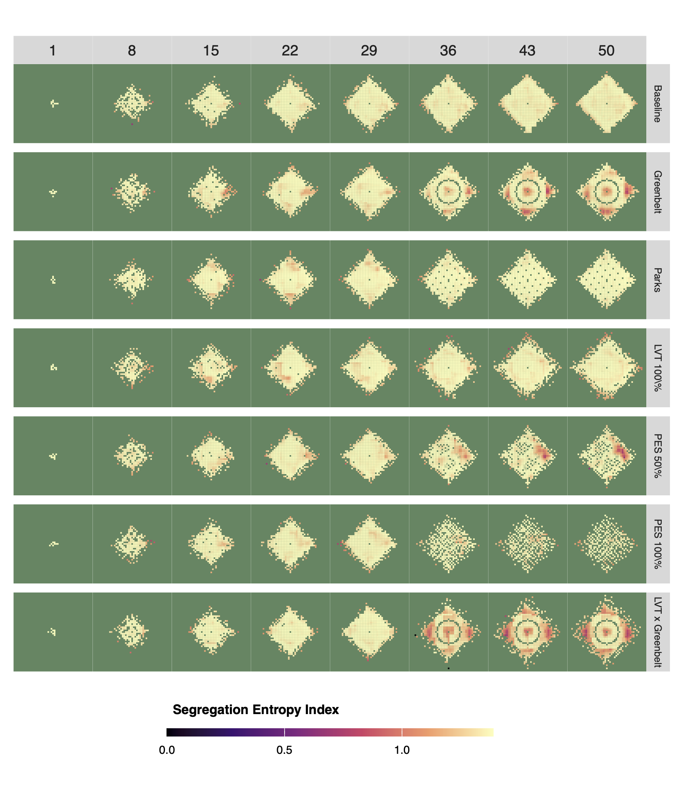Network Segregation
Embodied Emissions
Social Capital Evolution
Green Space Permeability
Critical Finding: LVT & Concentrated Amenities
- Land values spike near amenities → higher LVT burden
- Low-income households outbid from desirable locations
- Creates "winners" and "losers" geography
- Challenges optimistic LVT literature assumptions
- Suggests need for compensatory mechanisms
Scenario Outcomes: Parallel Coordinates
Comparing Classic baseline across multiple dimensions
LVT Scenarios: Policy Tradeoffs
Intensification vs. equity tensions across LVT levels
Gentrification Dynamics
Paper 3: Participatory Futures
Computational Backcasting for Social Transformation
Motivation
- Transition to long-term system transformation
- Socio-technical systems impose unique uncertainty
- Urban communities to global polycrisis
- Challenge: systems as open-ended
Approach
- Review and synthesis of eight retroanalytic methods
- From diverse domains (chemistry, biology, AI, anthropology)
- What makes retroanalytic perspective useful?
- Characteristics of problem spaces
- Ontological framing strategies
- Navigation and reconstruction techniques
Retroanalytic Methods Examined

Key Insight: Adjacent Possible
Human systems endogenously generate possibility spaces
- Technological innovation
- Institutional change
- Cultural evolution
- Kauffman: "unprestatable sets"
Retroanalytic Strategies: Summary Framework
| Strategy | Description | Examples Across Domains |
|---|---|---|
| Constraint Types | Physical, logical, temporal boundaries limiting possibility space | Chess legality; chemical valence; phylogenetic parsimony |
| Substitutes & Equifinality | Multiple pathways to same endpoint; functional equivalence | Retrosynthetic routes; convergent evolution; institutional alternatives |
| Enablement | Prior conditions that make future states possible; preadaptation | Precursor molecules; exaptation (feathers→flight); institutional bricolage |
| Protection | Temporarily constraining possibilities to preserve/enable specific outcomes | Protecting groups (chemistry); niche protection; strategic reserves |
| Metaconstraints | Higher-order rules structuring search; heuristics for pruning | Retrons; conserved domains; critical junctures; "fingerprints" |
| Stratification | Hierarchical decomposition into layers; macro-operators | Functional groups; nested scales; institutional levels |
| Speculative Intermediates | Hypothetical states inferred abductively; unobserved events | Novel reactions; ancestral sequences; counterfactual histories |
| Motifs & Patterns | Recurring configurations signaling important mechanisms | Tactical patterns (chess); functional complexes; cultural linkages |
Implications for Formal Retroanalytic Policy Planning
- Search boundaries of inverse constraint space vs. forward exploration of functional relationships
- Embrace pluralism: Identify common actions across contested futures—zones of agreement that enable desired possibilities
- "Designing for potential": Create option value and opportunity to make good choices
- Participatory futures (double meaning):
- Scale and diversify input in participative planning
- Center us as participants in guiding the adjacent possible
- Requisite system capabilities:
- Hierarchical decomposition into macrofunctional wholes and building blocks
- Integration of institutional-cultural, technological, environmental domains
- Combine manual and automated generation of speculative intermediates
Research Agenda
- Operationalization: Algorithmic 'grammar' for configurational state space
- Brian Arthur's combinatorial evolution, Boolean networks
- Knowledge units that can be logically assembled
- Technical machinery: Algorithmic generation and analysis
- Viability theory, genetic programming, AI/ML methods
- Proof of concepts: Historical analysis, documented backcasting exercises
- Stakeholder engagement: Interface for "triple loop learning," power dynamics, expanding worldviews
- Integration: Connect to existing backcasting, transition management, DMDU frameworks
- Adjacent applications: Bridge nomothetic explanations and historical particularism in anthropology, history, institutionalism
Key Findings
- Retroanalytic methods across domains share common strategies
- These strategies make problem-solving tractable while preserving discovery
- Cross-domain synthesis reveals transferable concepts for social transformation
Finding 1: Shared Retroanalytic Strategies
Common Elements
- Stratification of state spaces
- Recognition of motifs/patterns
- Substitution and equifinality
- Protection mechanisms
- Speculative intermediates
Domains Examined
- Retrosynthetic chemistry
- Ancestral sequence reconstruction
- Retrograde chess analysis
- Process tracing (institutions)
- Cultural phylogenetics
- AI planning (means-ends)
Finding 2: Managing Combinatorial Explosion
- Stratification: Breaking problems into hierarchical layers
- Protecting groups: Temporarily constraining possibilities to enable progress
- Motifs: Identifying "fingerprints" that signal important mechanisms
- Equifinality: Multiple pathways to same endpoint → strategic flexibility
Finding 3: Validation Across Domains
- Different epistemic situations require different validation approaches
- Chemistry: Experimental synthesis confirms pathway feasibility
- Biology: Statistical inference from phylogenetic models
- History: Evidentiary reasoning from causal-process observations
- Social transformation: Deliberative quality assurance in "extended peer communities"
Finding 4: Endogenous Possibility Generation
- Technological innovation creates new capabilities
- Institutional change opens new organizational forms
- Cultural evolution generates new meanings and values
- Kauffman: "unprestatable sets" and "adjacent possibles"
- Forward prediction inadequate → backward reasoning necessary
Finding 5: Preadaptation & Exaptation
- Preadaptation: Features evolved for one purpose enable future transformations
- Exaptation: Repurposing existing capabilities for new ends
- Examples: feathers (insulation → flight), lungs (buoyancy → respiration)
- Social analog: institutions developed for one purpose enable unforeseen futures
- Policy implication: Cultivate latent capacities with option value
Finding 6: Methodological Gaps
- Transitions literature: sophisticated narratives but limited computational methods
- DMDU: tests predetermined options, lacks systematic backward pathway generation
- Backcasting: emphasizes participation but limited guidance for combinatorial search
- None systematically integrate insights from technical retroanalytic domains
Synthesis: Framework Principles
- Formalize social systems as event networks rather than state machines
- Represent change through conditions, actors, effects (not predetermined transitions)
- Enable speculative intermediate generation through abductive reasoning
- Focus on near-term actions that expand possibility spaces
- Achieve resolution through compatibility across plural visions, not consensus
Contributions
- Guiding scaffold for qualitative pathway conception
- Foundations for formalized computational backcasting
- Enhance strategy generation for RDM, DAPP, STS methods
- Augment participative planning (local to international)
- Bridge nomothetic explanations and historical particularism
Concluding Remarks
"While we cannot know or design the future, we are not passive passengers. By looking backwards, we can begin to design for potential—cultivating our collective capacity to recognize, protect, and nurture the seeds of desirable futures that already surround us. We will not become Hari Seldon, but we might approach challenges more creatively, with broader participation together and as participants in what the future holds."
Acknowledgments
Committee: Steven W. Popper (Chair), Aaron Strong, Tim Gulden, Eric Lonsdorf
Mentors & Advisors: Rob Lempert, Jonathan Welburn, Angel O'Mahony, Paul Davis, Chris Nelson
Support: RAND School of Public Policy, Progress and Poverty Institute
Family: My wife, who inspired this path, and my children, who give me reason to pursue it